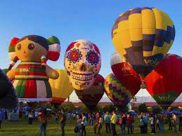
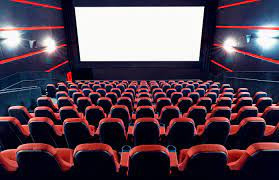

| Gastronomia | Restaurantes | |
| Sidrerías y Asadores | ||
| Bodegas de vino y alcohol | ||
| Productos típicos | ||
| Escuelas de hostelería | ||
| Cultura | Archivos y Bibliotecas |  |
| Museos | ||
| Palacios de congresos | ||
| Ferias de muestras | ||
| Ocio | Entretenimiento y diversión |  |
| Ocio cultural | ||
| Excursiones y deporte |